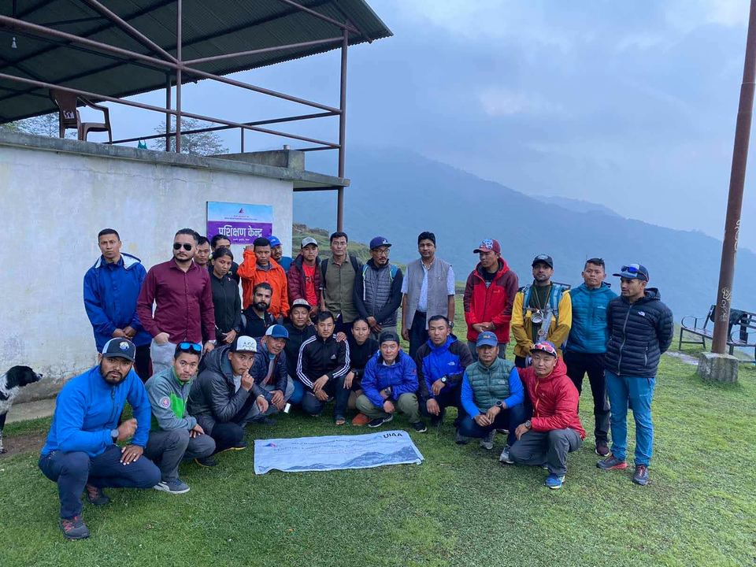

Writing
Short pieces on tourism policy, planning and sustainable development.
-

Why heritage walks keep visitors longer in Kathmandu
Short guided walks can add a night to a stay. Here is what the Kathmandu city core shows.
-

Planning ecotourism around community forests
Conservation and local income can share one plan. Notes from fieldwork in the Terai and the hills.
-

What a provincial tourism strategy should cover
Infrastructure, people, marketing and rules: a plain list of what a 15-year strategy needs.
-

How to read a tourism demand survey
Which questions matter, which numbers to trust, and how trekking agencies answer.
-

Homestays and local income
Homestay income stays in the village when the rules are simple and the standards are shared.
-

Lessons from the Second World Buddhist Summit 2004
Running a large national event: the budget, the partners and the checks that held it together.


Tell me about your project
Send a short note on what you are planning. I reply by email.
Send an inquiry